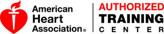

Services: Training Classes
Victor Farmington Ambulance is proud to offer a variety of training opportunities to area residents and businesses. Early First Aid and CPR can mean the difference between life and death and the initial care that you may be able to provide your friends and family can dramatically increase their chances of survival in cardiac arrest situations. According to the American Heart Association 70% of all sudden cardiac arrests happen at home and many victims of sudden cardiac arrest appear healthy and have no known heart disease prior to the event! The life you save with First Aid and CPR is likely to be someone you love.

Basic Life Support (BLS) for Healthcare Providers
This course is for healthcare professionals who need to know how to perform CPR and other lifesaving skills in a variety of settings.
Course Details: The Basic Life Support (BLS) for Healthcare Providers (HCP) Course is a video-based, Instructor-led course that teaches both single-rescuer and team basic life support. This course trains participants to promptly recognize several life-threatening emergencies, give high-quality chest compressions, deliver appropriate ventilations and provide early use of an AED. BLS for Healthcare Providers teaches skills using the American Heart Association’s proven Practice-While-Watching technique, which allows Instructors to observe students, provide feedback and guide students’ acquisition of skills. With their student manual for the course, students receive the new Pocket Reference Card, designed to provide quick emergency information to the rescuer at any time.
Course Length: 4 Hours
Course Fee: $48 (does not include the cost of the required student workbook*) **
Certification Period: 2 Years
Heartsaver First Aid
This course is for anyone with limited or no medical training who is interested in or needs to learn how to respond and render first aid at work or home.
Course Details: According to the Occupational Safety and Health Administration (OSHA), approximately 4 million injuries and illnesses occur annually in the workplace. Heartsaver First Aid is a classroom, video-based, instructor-led course that teaches students critical skills to respond to and manage an emergency in the first few minutes until emergency medical services (EMS) arrives. In this course, students learn skills such as how to treat bleeding, sprains, broken bones, shock and other first aid emergencies. Heartsaver First Aid teaches skills with the AHA’s research-proven Practice-While-Watching (PWW) technique, which allows instructors to observe the students, provide feedback and guide the students’ learning of skills. Upon successful completion, including a skills test, students receive a Heartsaver First Aid course completion card, valid for 2 years.
Course Length: 3.5 Hours
Course Fee: $40 (does not include the cost of the required student workbook*) **
Certification Period: 2 Years
Heartsaver CPR/AED
This course is for anyone with limited or no medical training who is interested in or needs to learn how to respond at work or home and perform CPR and use an AED until advanced help arrives.
Course Details: With nearly 80 percent of sudden cardiac arrests occurring outside the hospital, it is important that employers offer CPR and AED training for their employees to respond to a sudden cardiac arrest emergency. Heartsaver CPR AED is a classroom, video-based, instructor-led course that teaches adult CPR and AED use, as well as how to relieve choking on an adult. Optional modules include child CPR and AED use, infant CPR and child and infant choking. Heartsaver CPR AED teaches skills with AHA’s research-proven Practice-While-Watching (PWW) technique, which allows instructors to observe the students, provide feedback and guide the students’ learning of skills. Upon successful completion of the course, including a skills test, students receive a Heartsaver CPR AED course completion card, valid
for 2 years.
Course Length: 3.5 Hours
Course Fee: $40 (does not include the cost of the required student workbook*) **
Certification Period: 2 Years
Heartsaver First Aid and CPR/AED
This is a combination course that covers all topics covered in the stand alone Heartsaver First Aid and Heartsaver CPR/AED courses.
Course Details: According to the Occupational Safety and Health Administration (OSHA), approximately 4 million injuries and illnesses occur annually in the workplace, and nearly 80 percent of sudden cardiac arrests occur outside the hospital. Heartsaver First Aid CPR AED is a classroom, video-based, instructor-led course that teaches students critical skills needed to respond to and manage a first aid, choking or sudden cardiac arrest emergency in the first few minutes until emergency medical services (EMS) arrives. In this course, students learn skills such as how to treat bleeding, sprains, broken bones, shock and other first aid emergencies. This course also teaches adult CPR and AED use. Upon successful completion of the course, including a first aid, CPR and AED skills test, students receive a Heartsaver First Aid CPR AED course completion card, valid for 2 years.
Course Length: 7 Hours
Course Fee: $70 (does not include the cost of the required student workbook*) **
Certification Period: 2 Years
Contact our training department by calling the base at 585-924-3959 extension 3 or by emailing training@victorfarmingtonambulance.org.
* The AHA requires the student purchase a student workbook for its Heartsaver and BLS for Healthcare Providers courses. Workbooks can be purchased from VFVAC prior to arriving at class or on the day of the class by contacting us. You can also purchase a workbook in advance of the class by going to the following sites: Laerdal, Channing Bete, or WorldPoint.
** Large groups or businesses can contact us to discuss group training rates and onsite training!
AHA Disclaimer: The American Heart Association strongly promotes knowledge and proficiency in BLS, ACLS and PALS and has developed instructional materials for this purpose. Use of these materials in an educational course does not represent course sponsorship by the American Heart Association. Any fees charged for such course, except for a portion of fees needed for AHA course materials, do not represent income to the Association.